산업안전기사 (2020-09-26 기출문제)
1과목: 안전관리론
1. 라인(Line)형 안전관리 조직의 특징으로 옳은 것은?
- 안전에 관한 기술의 축적이 용이하다.
- 안전에 관한 지시나 조치가 신속하다
- 조직원 전원을 자율적으로 안전활동에 참여 시킬 수 있다.
- 권한 다툼이나 조정 때문에 통제수속이 복잡해지며, 시간과 노력이 소모된다.
(정답률: 84%)

2. 레빈(Lewin)의 인간 행동 특성을 다음과 같이 표현하였다. 변수 'P'가 의미하는 것은?
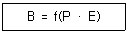
- 행동
- 소질
- 환경
- 함수
(정답률: 81%)
3. Y-K(Yutaka – Kohate) 성격검사에 관한 사항으로 옳은 것은?
- C,C'형은 적응이 빠르다.
- M,M'형은 내구성, 집념이 부족하다.
- S,S'형은 담력, 자신감이 강하다
- P,P'형은 운동, 결단이 빠르다.
(정답률: 63%)
4. 재해예방의 4원칙이 아닌 것은?
- 손실우연의 원칙
- 사전준비의 원칙
- 원인계기의 원칙
- 대책선정의 원칙
(정답률: 74%)
5. 재해의 발생확률은 개인적 특성이 아니라 그 사람이 종사하는 작업의 위험성에 기초한다는 이론은?
- 암시설
- 경향설
- 미숙설
- 기회설
(정답률: 52%)
6. 타인의 비판 없이 자유로운 토론을 통하여 다량의 독창적인 아이디어를 이끌어내고, 대안적 해결안을 찾기 위한 집단적 사고기법은?
- Role playing
- Brain storming
- Action playing
- Fish Bowl playing
(정답률: 92%)
7. 강도율 7인 사업장에서 한 작업자가 평생 동안 작업을 한다면 산업재해로 인한 근로손실 일수는 며칠로 예상되는가? (단, 이 사업장의 연근로시간과 한 작업자의 평생근로시간은 100000시간으로 가정한다.)
- 500
- 600
- 700
- 800
(정답률: 86%)
8. 산업안전보건법령상 유해·위험 방지를 위한 방호 조치가 필요한 기계·기구가 아닌 것은?
- 예초기
- 지게차
- 금속절단기
- 금속탐지기
(정답률: 89%)
9. 산업안전보건법령상 안전·보건표지의 색채와 사용사례의 연결로 틀린 것은?
- 노란색 – 화학물질 취급장소에서의 유해·위험 경고 이외의 위험경고
- 파란색 – 특정 행위의 지시 및 사실의 고지
- 빨간색 – 화학물질 취급장소에서의 유해·위험 경고
- 녹색 – 정지신호, 소화설비 및 그 장소, 유해행위의 금지
(정답률: 83%)
10. 재해의 발생형태 중 다음 그림이 나타내는 것은?
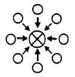
- 단순연쇄형
- 복합연쇄형
- 단순자극형
- 복합형
(정답률: 81%)
11. 생체리듬의 변화에 대한 설명으로 틀린 것은?
- 야간에는 체중이 감소한다.
- 야간에는 말초운동 기능이 증가된다.
- 체온, 혈압, 맥박수는 주간에 상승하고 야간에 감소한다
- 혈액의 수분과 염분량은 주간에 감소하고 야간에 상승한다.
(정답률: 78%)
12. 무재해 운동을 추진하기 위한 조직의 세 기둥으로 볼 수 없는 것은?
- 최고경영자의 경영자세
- 소집단 자주활동의 활성화
- 전 종업원의 안전요원화
- 라인관리자에 의한 안전보건의 추진
(정답률: 67%)
13. 안전인증 절연장갑에 안전인증 표시 외에 추가로 표시하여야 하는 등급별 색상의 연결로 옳은 것은? (단, 고용노동부 고시를 기준으로 한다.)
- 00등급 : 갈색
- 0등급 : 흰색
- 1등급 : 노란색
- 2등급 : 빨강색
(정답률: 77%)
14. 안전교육방법 중 구안법(Project Method)의 4단계의 순서로 옳은 것은?
- 계획수립 → 목적결정 → 활동 → 평가
- 평가 → 계획수립 → 목적결정 → 활동
- 목적결정 → 계획수립 → 활동 → 평가
- 활동 → 계획수립 → 목적결정 → 평가
(정답률: 76%)
15. 산업안전보건법령상 사업 내 안전보건교육 중 관리 감독자 정기교육의 내용이 아닌 것은?
- 유해·위험 작업환경 관리에 관한 사항
- 표준안전작업방법 및 지도 요령에 관한 사항
- 작업공정의 유해·위험과 재해 예방대책에 관한 사항
- 기계·기구의 위험성과 작업의 순서 및 동선에 관한 사항
(정답률: 78%)
16. 다음 재해원인 중 간접원인에 해당하지 않는 것은?
- 기술적 원인
- 교육적 원인
- 관리적 원인
- 인적 원인
(정답률: 78%)
17. 재해원인 분석방법의 통계적 원인분석 중 사고의 유형, 기인물 등 분류항목을 큰 순서대로 도표화한 것은?
- 파레토도
- 특성요인도
- 크로스도
- 관리도
(정답률: 76%)
18. 다음 중 헤드십(headship)에 관한 설명과 가장 거리가 먼 것은?
- 권한의 근거는 공식적이다.
- 지휘의 형태는 민주주의적이다.
- 상사와 부하와의 사회적 간격은 넓다.
- 상사와 부하와의 관계는 지배적이다.
(정답률: 86%)
19. 다음 설명에 해당하는 학습 지도의 원리는?
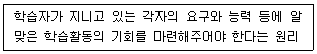
- 직관의 원리
- 자기활동의 원리
- 개별화의 원리
- 사회화의 원리
(정답률: 80%)
20. 안전교육의 단계에 있어 교육대상자가 스스로 행함으로서 습득하게 하는 교육은?
- 의식교육
- 기능교육
- 지식교육
- 태도교육
(정답률: 76%)
2과목: 인간공학 및 시스템안전공학
21. 결함수분석의 기호 중 입력사상이 어느 하나라도 발생할 경우 출력사상이 발생하는 것은?
- NOR GATE
- AND GATE
- OR GATE
- NAND GATE
(정답률: 82%)
22. 가스밸브를 잠그는 것을 잊어 사고가 발생했다면 작업자는 어떤 인적오류를 범한 것인가?
- 생략 오류(omission error)
- 시간지연 오류(time error)
- 순서 오류(sequential error)
- 작위적 오류(commission error)
(정답률: 86%)
23. 어떤 소리가 1000Hz, 60dB인 음과 같은 높이임에도 4배 더 크게 들린다면, 이 소리의 음압수준은 얼마인가?
- 70dB
- 80dB
- 90dB
- 100dB
(정답률: 71%)
24. 시스템 안전분석 방법 중 예비위험분석(PHA)단계에서 식별하는 4가지 범주에 속하지 않는 것은?
- 위기상태
- 무시가능상태
- 파국적상태
- 예비조치상태
(정답률: 66%)
25. 다음은 불꽃놀이용 화학물질취급설비에 대한 정량적 평가이다. 해당 항목에 대한 위험등급이 올바르게 연결된 것은?
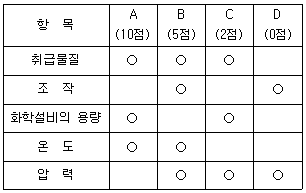
- 취급물질 - Ⅰ등급, 화학설비의 용량 - Ⅰ등급
- 온도 - Ⅰ등급, 화학설비의 용량 - Ⅱ등급
- 취급물질 - Ⅰ등급, 조작 - Ⅳ등급
- 온도 - Ⅱ등급, 압력 - Ⅲ등급
(정답률: 53%)
26. 산업안전보건법령상 유해위험방지계획서의 제출 대상 제조업은 전기 계약 용량이 얼마이상인 경우에 해당되는가? (단, 기타 예외사항은 제외한다)
- 50kW
- 100kW
- 200kW
- 300kW
(정답률: 77%)
27. 인간-기계 시스템에서 시스템의 설계를 다음과 같이 구분할 때 제3단계인 기본설계에 해당되지 않는 것은?
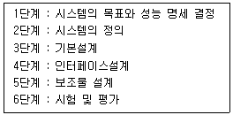
- 화면 설계
- 작업 설계
- 직무 분석
- 기능 할당
(정답률: 72%)
28. 결함수분석법에서 Path set에 관한 설명으로 옳은 것은?
- 시스템의 약점을 표현한 것이다.
- Top 사상을 발생시키는 조합이다.
- 시스템이 고장 나지 않도록 하는 사상의 조합이다.
- 시스템고장을 유발시키는 필요불가결한 기본사상들의 집합이다.
(정답률: 75%)
29. 연구 기준의 요건과 내용이 옳은 것은?
- 무오염성 : 실제로 의도하는 바와 부합해야 한다.
- 적절성 : 반복 실험 시 재현성이 있어야 한다.
- 신뢰성 : 측정하고자 하는 변수 이외의 다른 변수의 영향을 받아서는 안 된다.
- 민감도 : 피실험자 사이에서 볼 수 있는 예상 차이점에 비례하는 단위로 측정해야 한다.
(정답률: 61%)
30. FTA결과 다음과 같은 패스셋을 구하였다. 최소 패스셋(Minimal path sets)으로 옳은 것은?
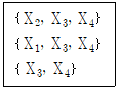
- {X3, X4}
- {X1, X3, X4}
- {X2, X3, X4}
- {X2, X3, X4}와 {X3, X4}
(정답률: 83%)
31. 인체측정에 대한 설명으로 옳은 것은?
- 인체측정은 동적측정과 정적측정이 있다.
- 인체측정학은 인체의 생화학적 특징을 다룬다.
- 자세에 따른 인체지수의 변화는 없다고 가정한다
- 측정항목에 무게, 둘레, 두께, 길이는 포함되지 않는다.
(정답률: 78%)
32. 실린더 블록에 사용하는 가스켓의 수명 분포는 X~N(10000, 2002)인 정규분포를 따른다. t=9600시간일 경우에 신뢰도(R(t))는? (단, P(Z≤1)=0.8413, P(Z≤1.5)=0.9332, P(Z≤2)=0.9772, P(Z≤3)=0.9987이다.)
- 84.13%
- 93.32%
- 97.72%
- 99.87%
(정답률: 61%)
33. 다음 중 열 중독증(heat illness)의 강도를 올바르게 나열한 것은?
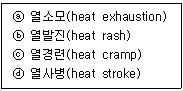
- ⓒ ＜ ⓑ ＜ ⓐ ＜ ⓓ
- ⓒ ＜ ⓑ ＜ ⓓ ＜ ⓐ
- ⓑ ＜ ⓒ ＜ ⓐ ＜ ⓓ
- ⓑ ＜ ⓓ ＜ ⓐ ＜ ⓒ
(정답률: 75%)
34. 사무실 의자나 책상에 적용할 인체 측정 자료의 설계 원칙으로 가장 적합한 것은?
- 평균치 설계
- 조절식 설계
- 최대치 설계
- 최소치 설계
(정답률: 66%)
35. 암호체계의 사용 시 고려해야 될 사항과 거리가 먼 것은?
- 정보를 암호화한 자극은 검출이 가능하여야 한다.
- 다 차원의 암호보다 단일 차원화된 암호가 정보 전달이 촉진된다.
- 암호를 사용할 때는 사용자가 그 뜻을 분명히 알 수 있어야 한다
- 모든 암호 표시는 감지장치에 의해 검출될 수 있고, 다른 암호 표시와 구별될 수 있어야 한다.
(정답률: 74%)
36. 신호검출이론(SDT)의 판정결과 중 신호가 없었는데도 있었다고 말하는 경우는?
- 긍정(hit)
- 누락(miss)
- 허위(false alarm)
- 부정(correct rejection)
(정답률: 85%)
37. 촉감의 일반적인 척도의 하나인 2점 문턱값(two-point Threshold)이 감소하는 순서대로 나열된 것은?
- 손가락 → 손바닥 → 손가락 끝
- 손바닥 → 손가락 → 손가락 끝
- 손가락 끝 → 손가락 → 손바닥
- 손가락 끝 → 손바닥 → 손가락
(정답률: 72%)
38. 시스템 안전분석 방법 중 HAZOP에서 “완전대체”를 의미하는 것은?
- NOT
- REVERSE
- PART OF
- OTHER THAN
(정답률: 80%)
39. 어느부품 1000개를 100000시간 동안 가동 하였을 때 5개의 불량품이 발생하였을 경우 평균 동작시간(MTTF)은?
- 1 × 106 시간
- 2 × 107 시간
- 1 × 108 시간
- 2 × 109 시간
(정답률: 64%)
40. 신체활동의 생리학적 측정법 중 전신의 육체적인 활동을 측정하는데 가장 적합한 방법은?
- Flicker측정
- 산소 소비량 측정
- 근전도(EMG) 측정
- 피부전기반사(GSR) 측정
(정답률: 60%)
3과목: 기계위험방지기술
41. 산업안전보건법령상 롤러기의 방호장치 중 롤러의 앞면 표면 속도가 30m/min 이상 일 때 무부하 동작에서 급정지거리는?
- 앞면 롤러 원주의 1/2.5 이내
- 앞면 롤러 원주의 1/3 이내
- 앞면 롤러 원주의 1/3.5 이내
- 앞면 롤러 원주의 1/5.5 이내
(정답률: 75%)
42. 극한하중이 600N인 체인에 안전계수가 4일 때 체인의 정격하중(N)은?
- 130
- 140
- 150
- 160
(정답률: 86%)
43. 연삭작업에서 숫돌의 파괴원인으로 가장 적절하지 않은 것은?
- 숫돌의 회전속도가 너무 빠를 때
- 연삭작업 시 숫돌의 정면을 사용할 때
- 숫돌에 큰 충격을 줬을 때
- 숫돌의 회전중심이 제대로 잡히지 않았을 때
(정답률: 82%)
44. 산업안전보건법령상 용접장치의 안전에 관한 준수사항으로 옳은 것은?
- 아세틸렌 용접장치의 발생기실을 옥외에 설치한 경우에는 그 개구부를 다른 건축물로부터 1m 이상 떨어지도록 하여야 한다.
- 가스집합장치로부터 7m 이내의 장소에서는 화기의 사용을 금지시킨다.
- 아세틸렌 발생기에서 10m 이내 또는 발생기실에서 4m 이내의 장소에서는 화기의 사용을 금지시킨다.
- 아세틸렌 용접장치를 사용하여 용접작업을 할 경우 게이지 압력이 127kPa을 초과하는 압력의 아세틸렌을 발생시켜 사용해서는 아니 된다.
(정답률: 77%)
45. 500rpm으로 회전하는 연삭숫돌의 지름이 300mm일 때 원주속도(m/min)은?
- 약 748
- 약 650
- 약 532
- 약 471
(정답률: 76%)
46. 산업안전보건법령상 로봇을 운전하는 경우 근로자가 로봇에 부딪칠 위험이 있을 때 높이는 최소 얼마이상의 울타리를 설치하여야 하는가? (단, 로봇의 가동범위 등을 고려하여 높이로 인한 위험성이 없는 경우는 제외)
- 0.9m
- 1.2m
- 1.5m
- 1.8m
(정답률: 80%)
47. 일반적으로 전류가 과대하고, 용접속도가 너무 빠르며, 아크를 짧게 유지하기 어려운 경우 모재 및 용접부의 일부가 녹아서 홈 또는 오목한 부분이 생기는 용접부 결함은?
- 잔류응력
- 융합불량
- 기공
- 언더컷
(정답률: 79%)
48. 산업안전보건법령상 승강기의 종류로 옳지 않은 것은?
- 승객용 엘리베이터
- 리프트
- 화물용 엘리베이터
- 승객화물용 엘리베이터
(정답률: 82%)
49. 다음 중 선반의 방호장치로 가장 거리가 먼 것은?
- 쉴드(Shield)
- 슬라이딩
- 척 커버
- 칩 브레이커
(정답률: 70%)
50. 산업안전보건법령상 목재가공용 둥근톱 작업에서 분할날과 톱날 원주면과의 간격은 최대 얼마 이내가 되도록 조정하는가?
- 10mm
- 12mm
- 14mm
- 16mm
(정답률: 66%)
51. 기계설비에서 기계 고장률의 기본 모형으로 옳지 않은 것은?
- 조립 고장
- 초기 고장
- 우발 고장
- 마모 고장
(정답률: 81%)
52. 산업안전보건법령상 화물의 낙하에 의해 운전자가 위험을 미칠 경우 지게차의 헤드가드(head guard)는 지게차의 최대하중의 몇 배가 되는 등분포정하중에 견디는 강도를 가져야 하는가? (단, 4톤을 넘는 값은 제외)
- 1배
- 1.5배
- 2배
- 3배
(정답률: 78%)
53. 다음 중 컨베이어의 안전장치로 옳지 않은 것은?
- 비상정지장치
- 반발예방장치
- 역회전방지장치
- 이탈방지장치
(정답률: 78%)
54. 크레인에 돌발 상황이 발생한 경우 안전을 유지하기 위하여 모든 전원을 차단하여 크레인을 급정지시키는 방호장치는?
- 호이스트
- 이탈방지장치
- 비상정지장치
- 아우트리거
(정답률: 85%)
55. 산업안전보건법령상 프레스 등을 사용하여 작업을 할 때에 작업시작 전 점검 사항으로 가장 거리가 먼 것은?
- 압력방출장치의 기능
- 클러치 및 브레이크의 기능
- 프레스의 금형 및 고정볼트 상태
- 1행정 1정지기구·급정지장치 및 비상정지장치의 기능
(정답률: 76%)
56. 다음 중 프레스 방호장치에서 게이트 가드식 방호장치의 종류를 작동방식에 따라 분류할 때 가장 거리가 먼 것은?
- 경사식
- 하강식
- 도립식
- 횡 슬라이드 식
(정답률: 56%)
57. 선반작업의 안전수칙으로 가장 거리가 먼 것은?
- 기계에 주유 및 청소를 할 때에는 저속회전에서 한다.
- 일반적으로 가공물의 길이가 지름의 12배 이상일 때는 방진구를 사용하여 선반작업을 한다.
- 바이트는 가급적 짧게 설치한다.
- 면장갑을 사용하지 않는다.
(정답률: 84%)
58. 다음 중 보일러 운전 시 안전수칙으로 가장 적절하지 않은 것은?
- 가동 중인 보일러에는 작업자가 항상 정위치를 떠나지 아니할 것
- 보일러의 각종 부속장치의 누설상태를 점검할 것
- 압력방출장치는 매 7년마다 정기적으로 작동시험을 할 것
- 노 내의 환기 및 통풍장치를 점검할 것
(정답률: 81%)
59. 산업안전보건법령상 크레인에서 권과방지장치의 달기구 윗면이 권상장치의 아랫면과 접촉할 우려가 있는 경우 최소 몇 m 이상 간격이 되도록 조정하여야 하는가? (단, 직동식 권과방지장치의 경우는 제외)
- 0.1
- 0.15
- 0.25
- 0.3
(정답률: 41%)
60. 슬라이드가 내려옴에 따라 손을 쳐내는 막대가 좌우로 왕복하면서 위험한계에 있는 손을 보호하는 프레스 방호장치는?
- 수인식
- 게이트 가드식
- 반발예방장치
- 손쳐내기식
(정답률: 86%)
4과목: 전기위험방지기술
61. KS C IEC 60079-0에 따른 방폭기기에 대한 설명이다. 다음 빈칸에 들어갈 알맞은 용어는?
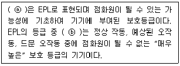
- ⓐ Explosion Protection Level, ⓑ EPL Ga
- ⓐ Explosion Protection Level, ⓑ EPL Gc
- ⓐ Equipment Protection Level, ⓑ EPL Ga
- ⓐ Equipment Protection Level, ⓑ EPL Gc
(정답률: 55%)
62. 접지계통 분류에서 TN접지방식이 아닌 것은?
- TN-S 방식
- TN-C 방식
- TN-T 방식
- TN-C-S 방식
(정답률: 71%)
63. 접지공사의 종류에 따른 접지선(연동선)의 굵기 기준으로 옳은 것은?(관련 규정 개정전 문제로 여기서는 기존 정답인 1번을 누르면 정답 처리됩니다. 자세한 내용은 해설을 참고하세요.)
- 제1종 : 공칭단면적 6mm2 이상
- 제2종 : 공칭단면적 12mm2 이상
- 제3종 : 공칭단면적 5mm2 이상
- 특별 제3종 : 공칭단면적 3.5mm2 이상
(정답률: 67%)
64. 최소 착화에너지가 0.26mJ인 가스에 정전용량이 100pF인 대전 물체로부터 정전기 방전에 의하여 착화할 수 있는 전압은 약 몇 V 인가?
- 2240
- 2260
- 2280
- 2300
(정답률: 57%)
65. 누전차단기의 구성요소가 아닌 것은?
- 누전검출부
- 영상변류기
- 차단장치
- 전력퓨즈
(정답률: 64%)
66. 우리나라의 안전전압으로 볼 수 있는 것은 약 몇 V 인가?
- 30
- 50
- 60
- 70
(정답률: 76%)
67. 산업안전보건기준에 관한 규칙에 따라 누전에 의한 감전의 위험을 방지하기 위하여 접지를 하여야 하는 대상의 기준으로 틀린 것은? (단, 예외조건은 고려하지 않는다)
- 전기기계·기구의 금속제 외함
- 고압 이상의 전기를 사용하는 전기기계·기구 주변의 금속제 칸막이
- 고정배선에 접속된 전기기계·기구 중 사용전압이 대지 전압 100V를 넘는 비충전 금속체
- 코드와 플러그를 접속하여 사용하는 전기기계·기구 중 휴대형 전동기계·기구의 노출된 비충전 금속체
(정답률: 62%)
68. 정전유도를 받고 있는 접지되어 있지 않는 도전성 물체에 접촉한 경우 전격을 당하게 되는데 이 때 물체에 유도된 전압 V(V)를 옳게 나타낸 것은? (단, E는 송전선의 대지전압, C1은 송전선과 물체사이의 정전용량, C2는 물체와 대지사이의 정전용량이며, 물체와 대지사이의 저항은 무시한다.)
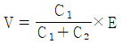
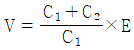
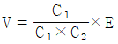
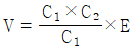
(정답률: 63%)
69. 교류 아크 용접기의 자동전격방지장치는 전격의 위험을 방지하기 위하여 아크 발생이 중단된 후 약 1초 이내에 출력 측 무부하 전압을 자동적으로 몇 V 이하로 저하시켜야 하는가?
- 85
- 70
- 50
- 25
(정답률: 68%)
70. 정전기 발생에 영향을 주는 요인으로 가장 적절하지 않은 것은?
- 분리속도
- 물체의 질량
- 접촉면적 및 압력
- 물체의 표면상태
(정답률: 77%)
71. 다음에서 설명하고 있는 방폭구조는?
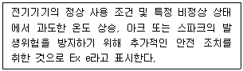
- 유입 방폭구조
- 압력 방폭구조
- 내압 방폭구조
- 안전증 방폭구조
(정답률: 77%)
72. KS C IEC 60079-6에 따른 유입방폭구조 “o” 방폭장비의 최소 IP 등급은?
- IP44
- IP54
- IP55
- IP66
(정답률: 69%)
73. 20Ω의 저항 중에 5A의 전류를 3분간 흘렸을 때의 발열량(cal)은?
- 4320
- 90000
- 21600
- 376560
(정답률: 52%)
74. 다음은 어떤 방전에 대한 설명인가?
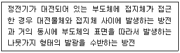
- 코로나 방전
- 뇌상 방전
- 연면방전
- 불꽃 방전
(정답률: 66%)
75. 가연성 가스가 있는 곳에 저압 옥내전기설비를 금속관 공사에 의해 시설하고자 한다. 관 상호 간 또는 관과 전기기계기구와는 몇 턱 이상 나사조임으로 접속하여야 하는가?
- 2턱
- 3턱
- 4턱
- 5턱
(정답률: 61%)
76. 전기시설의 직접 접촉에 의한 감전방지 방법으로 적절하지 않은 것은?
- 충전부는 내구성이 있는 절연물로 완전히 덮어 감쌀 것
- 충전부가 노출되지 않도록 폐쇄형 외함이 있는 구조로 할 것
- 충전부에 충분한 절연효과가 있는 방호망 또는 절연 덮개를 설치할 것
- 충전부는 출입이 용이한 전개된 장소에 설치하고, 위험표시 등의 방법으로 방호를 강화할 것
(정답률: 80%)
77. 심실세동을 일으키는 위험한계 에너지는 약 몇 J 인가? (단, 심실세동 전류
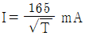
, 인체의 전기저항 R=800Ω, 통전시간 T=1초 이다.)- 12
- 22
- 32
- 42
(정답률: 72%)
78. 전기기계·기구에 설치되어 있는 감전방지용 누전차단기의 정격감도전류 및 작동시간으로 옳은 것은? (단, 정격전부하전류가 50A 미만이다.)
- 15mA이하, 0.1초 이내
- 30mA이하, 0.03초 이내
- 50mA이하, 0.5초 이내
- 100mA이하, 0.⑤초 이내
(정답률: 82%)
79. 피뢰레벨에 따른 회전구체 반경이 틀린 것은?
- 피뢰레벨 Ⅰ: 20m
- 피뢰레벨 Ⅱ: 30m
- 피뢰레벨 Ⅲ: 50m
- 피뢰레벨 Ⅳ: 60m
(정답률: 61%)
80. 지락사고 시 1초를 초과하고 2초 이내에 고압전로를 자동차단하는 장치가 설치되어 있는 고압전로에 제2종 접지공사를 하였다. 접지저항은 몇 Ω이하로 유지해야 하는가? (단, 변압기의 고압측 전로의 1선 지락전류는 10A 이다.)(관련 규정 개정전 문제로 여기서는 기존 정답인 3번을 누르면 정답 처리됩니다. 자세한 내용은 해설을 참고하세요.)
- 10Ω
- 20Ω
- 30Ω
- 40Ω
(정답률: 66%)
5과목: 화학설비위험방지기술
81. 사업주는 가스폭발 위험장소 또는 분진폭발 위험장소에 설치되는 건축물 등에 대해서는 규정에서 정한 부분을 내화구조로 하여야 한다. 다음 중 내화구조로 하여야 하는 부분에 대한 기준이 틀린 것은?
- 건축물의 기둥 : 지상 1층(지상 1층의 높이가 6미터를 초과하는 경우에는 6미터)까지
- 위험물 저장·취급용기의 지지대(높이가 30센티미터 이하인 것은 제외) : 지상으로부터 지지대의 끝부분까지
- 건축물의 보 : 지상2층(지상 2층의 높이가 10미터를 초과하는 경우에는 10미터)까지
- 배관·전선관 등의 지지대 : 지상으로부터 1단(1단의 높이가 6미터를 초과하는 경우에는 6미터)까지
(정답률: 57%)
82. 다음 물질 중 인화점이 가장 낮은 물질은?
- 이황화탄소
- 아세톤
- 크실렌
- 경유
(정답률: 65%)
83. 물의 소화력을 높이기 위하여 물에 탄산칼륨(K2CO3)과 같은 염류를 첨가한 소화약제를 일반적으로 무엇이라 하는가?
- 포 소화약제
- 분말 소화약제
- 강화액 소화약제
- 산알칼리 소화약제
(정답률: 59%)
84. 다음 중 분진의 폭발위험성을 증대시키는 조건에 해당하는 것은?
- 분진의 온도가 낮을수록
- 분위기 중 산소 농도가 작을수록
- 분진 내의 수분농도가 작을수록
- 분진의 표면적이 입자체적에 비교하여 작을수록
(정답률: 65%)
85. 다음 중 관의 지름을 변경하는데 사용되는 관의 부속품으로 가장 적절한 것은?
- 엘보우(Elbow)
- 커플링(Coupling)
- 유니온(Union)
- 리듀서(Reducer)
(정답률: 77%)
86. 가연성물질의 저장 시 산소농도를 일정한 값 이하로 낮추어 연소를 방지할 수 있는데 이때 첨가하는 물질로 적합하지 않은 것은?
- 질소
- 이산화탄소
- 헬륨
- 일산화탄소
(정답률: 63%)
87. 다음 중 물과의 반응성이 가장 큰 물질은?
- 니트로글리세린
- 이황화탄소
- 금속나트륨
- 석유
(정답률: 74%)
88. 산업안전보건법령상 위험물질의 종류에서 폭발성 물질에 해당하는 것은?
- 니트로화합물
- 등유
- 황
- 질산
(정답률: 78%)
89. 어떤 습한 고체재료 10kg을 완전 건조 후 무게를 측정하였더니 6.8kg 이었다. 이 재료의 건량 기준 함수율은 몇 kg·H2O/kg 인가?
- 0.25
- 0.36
- 0.47
- 0.58
(정답률: 54%)
90. 대기압하에서 인화점이 0℃ 이하인 물질이 아닌 것은?
- 메탄올
- 이황화탄소
- 산화프로필렌
- 디에틸에테르
(정답률: 51%)
91. 가연성가스의 폭발범위에 관한 설명으로 틀린 것은?
- 압력 증가에 따라 폭발 상한계와 하한계가 모두 현저히 증가한다.
- 불활성가스를 주입하면 폭발범위는 좁아진다.
- 온도의 상승과 함께 폭발범위는 넓어진다.
- 산소 중에서 폭발범위는 공기 중에서 보다 넓어진다.
(정답률: 72%)
92. 열교환기의 정기적 점검을 일상점검과 개방점검으로 구분할 때 개방점검 항목에 해당하는 것은?
- 보냉재의 파손 상황
- 플랜지부나 용접부에서의 누출 여부
- 기초볼트의 체결 상태
- 생성물, 부착물에 의한 오염 상황
(정답률: 61%)
93. 다음 중 분진 폭발을 일으킬 위험이 가장 높은 물질은?
- 염소
- 마그네슘
- 산화칼슘
- 에틸렌
(정답률: 70%)
94. 산업안전보건법령에서 인화성 액체를 정의할 때 기준이 되는 표준압력은 몇 kPa 인가?
- 1
- 100
- 101.3
- 273.15
(정답률: 66%)
95. 다음 중 C급 화재에 해당하는 것은?
- 금속화재
- 전기화재
- 일반화재
- 유류화재
(정답률: 79%)
96. 액화 프로판 310kg을 내용적 50L 용기에 충전할 때 필요한 소요 용기의 수는 몇 개인가? (단, 액화 프로판의 가스정수는 2.35이다.)
- 15
- 17
- 19
- 21
(정답률: 62%)
97. 다음 중 가연성 가스의 연소형태에 해당하는 것은?
- 분해연소
- 증발연소
- 표면연소
- 확산연소
(정답률: 65%)
98. 다음 중 산업안전보건법령상 위험물질의 종류에 있어 인화성 가스에 해당하지 않는 것은?
- 수소
- 부탄
- 에틸렌
- 과산화수소
(정답률: 64%)
99. 반응폭주 등 급격한 압력상승의 우려가 있는 경우에 설치하여야 하는 것은?
- 파열판
- 통기밸브
- 체크밸브
- Flame arrester
(정답률: 64%)
100. 다음 중 응상폭발이 아닌 것은?
- 분해폭발
- 수증기폭발
- 전선폭발
- 고상간의 전이에 의한 폭발
(정답률: 48%)
6과목: 건설안전기술
101. 건설재해대책의 사면보호공법 중 식물을 생육시켜 그 뿌리로 사면의 표층토를 고정하여 빗물에 의한 침식, 동상, 이완 등을 방지하고, 녹화에 의한 경관조성을 목적으로 시공하는 것은?
- 식생공
- 쉴드공
- 뿜어 붙이기공
- 블록공
(정답률: 82%)
102. 산업안전보건법령에 따른 양중기의 종류에 해당하지 않는 것은?
- 곤돌라
- 리프트
- 클램쉘
- 크레인
(정답률: 72%)
103. 화물취급작업과 관련한 위험방지를 위해 조치하여야 할 사항으로 옳지 않은 것은?
- 하역작업을 하는 장소에서 작업장 및 통로의 위험한 부분에는 안전하게 작업할 수 있는 조명을 유지할 것
- 하역작업을 하는 장소에서 부두 또는 안벽의 선을 따라 통로를 설치하는 경우에는 폭을 50cm 이상으로 할 것
- 차량 등에서 화물을 내리는 작업을 하는 경우에 해당 작업에 종사하는 근로자에게 쌓여 있는 화물 중간에서 화물을 빼내도록 하지 말 것
- 꼬임이 끊어진 섬유로프 등을 화물운반용 또는 고정용으로 사용하지 말 것
(정답률: 78%)
104. 표준관입시험에 관한 설명으로 옳지 않은 것은?
- N치(N-value)는 지반을 30cm 굴진하는데 필요한 타격횟수를 의미한다.
- N치 4~10일 경우 모래의 상대밀도는 매우 단단한 편이다.
- 63.5kg 무게의 추를 76cm 높이에서 자유낙하하여 타격하는 시험이다.
- 사질지반에 적용하며, 점토지반에서는 편차가 커서 신뢰성이 떨어진다.
(정답률: 55%)
1⑤. 근로자의 추락 등의 위험을 방지하기 위한 안전난간의 설치요건에서 상부난간대를 120cm 이상 지점에 설치하는 경우 중간난간대를 최소 몇 단 이상 균등하게 설치하여야 하는가?
- 2단
- 3단
- 4단
- 5단
(정답률: 57%)
106. 건설현장에 설치하는 사다리식 통로의 설치기준으로 옳지 않은 것은?
- 발판과 벽과의 사이는 15cm 이상의 간격을 유지할 것
- 발판의 간격은 일정하게 할 것
- 사다리의 상단은 걸쳐놓은 지점으로부터 60cm 이상 올라가도록 할 것
- 사다리식 통로의 길이가 10m 이상인 경우에는 3m 이내마다 계단참을 설치할 것
(정답률: 77%)
107. 불도저를 이용한 작업 중 안전조치사항으로 옳지 않은 것은?
- 작업종료와 동시에 삽날을 지면에서 띄우고 주차 제동장치를 건다.
- 모든 조종간은 엔진 시동전에 중립 위치에 놓는다.
- 장비의 승차 및 하차 시 뛰어내리거나 오르지 말고 안전하게 잡고 오르내린다.
- 야간작업 시 자주 장비에서 내려와 장비 주위를 살피며 점검하여야 한다.
(정답률: 70%)
108. 건설공사의 산업안전보건관리비 계상 시 대상액이 구분되어 있지 않은 공사는 도급계약 또는 자체사업 계획 상의 총 공사금액 중 얼마를 대상액으로 하는가?
- 50%
- 60%
- 70%
- 80%
(정답률: 56%)
109. 도심지 폭파해체공법에 관한 설명으로 옳지 않은 것은?
- 장기간 발생하는 진동, 소음이 적다.
- 해체 속도가 빠르다.
- 주위의 구조물에 끼치는 영향이 적다.
- 많은 분진 발생으로 민원을 발생시킬 우려가 있다.
(정답률: 72%)
110. NATM공법 터널공사의 경우 록 볼트 작업과 관련된 계측결과에 해당되지 않은 것은?
- 내공변위 측정 결과
- 천단침하 측정 결과
- 인발시험 결과
- 진동 측정 결과
(정답률: 40%)
111. 거푸집동바리 등을 조립하는 경우에 준수하여야 할 사항으로 옳지 않은 것은?
- 깔목의 사용, 콘크리트 타설, 말뚝박기 등 동바리의 침하를 방지하기 위한 조치를 할 것
- 개구부 상부에 동바리를 설치하는 경우에는 상부하중을 견딜 수 있는 견고한 받침대를 설치할 것
- 거푸집이 곡면인 경우에는 버팀대의 부착 등 그 거푸집의 부상(浮上)을 방지하기 위한 조치를 할 것
- 동바리의 이음은 맞댄이음이나 장부이음을 피할 것
(정답률: 77%)
112. 비계의 높이가 2m 이상인 작업장소에 설치하는 작업발판의 설치기준으로 옳지 않은 것은? (단, 달비계, 달대비계 및 말비계는 제외)
- 작업발판의 폭은 40cm 이상으로 한다.
- 작업발판재료는 뒤집히거나 떨어지지 않도록 하나 이상의 지지물에 연결하거나 고정시킨다.
- 발판재료 간의 틈은 3cm 이하로 한다.
- 작업발판의 지지물은 하중에 의하여 파괴될 우려가 없는 것을 사용한다.
(정답률: 66%)
113. 흙막이 지보공을 설치하였을 경우 정기적으로 점검하고 이상을 발견하면 즉시 보수하여야 하는 사항과 가장 거리가 먼 것은?
- 부재의 접속부·부착부 및 교차부의 상태
- 버팀대의 긴압(緊壓)의 정도
- 부재의 손상·변형·부식·변위 및 탈락의 유무와 상태
- 지표수의 흐름 상태
(정답률: 74%)
114. 말비계를 조립하여 사용하는 경우 지주부재와 수평면의 기울기는 얼마 이하로 하여야 하는가?
- 65°
- 70°
- 75°
- 80°
(정답률: 68%)
115. 지반 등의 굴착 시 위험을 방지하기 위한 연암 지반 굴착면의 기울기 기준으로 옳은 것은?(관련 규정 개정전 문제로 여기서는 기존 정답인 3번을 누르면 정답 처리됩니다. 자세한 내용은 해설을 참고하세요.)
- 1 : 0.3
- 1 : 0.4
- 1 : 0.5
- 1 : 0.6
(정답률: 75%)
116. 작업발판 및 통로의 끝이나 개구부로서 근로자가 추락할 위험이 있는 장소에서 난간등의 설치가 매우 곤란하거나 작업의 필요상 임시로 난간등을 해체하여야 하는 경우에 설치하여야 하는 것은?
- 구명구
- 수직보호망
- 석면포
- 추락방호망
(정답률: 76%)
117. 흙막이 공법을 흙막이 지지방식에 의한 분류와 구조방식에 의한 분류로 나눌 때 다음 중 지지방식에 의한 분류에 해당하는 것은?
- 수평 버팀대식 흙막이 공법
- H-Pile 공법
- 지하연속벽 공법
- Top down method 공법
(정답률: 73%)
118. 철골용접부의 내부결함을 검사하는 방법으로 가장 거리가 먼 것은?(문제 오류로 가답안 발표시 1번으로 발표되었지만 확정답안 발표시 1, 3, 4번이 정답처리 되었습니다. 여기서는 가답안인 1번을 누르시면 정답 처리 됩니다.)
- 알칼리 반응 시험
- 방사선 투과시험
- 자기분말 탐상시험
- 침투 탐상시험
(정답률: 80%)
119. 유해위험방지 계획서를 제출하려고 할 때 그 첨부서류와 가장 거리가 먼 것은?
- 공사개요서
- 산업안전보건관리비 작성요령
- 전체 공정표
- 재해 발생 위험 시 연락 및 대피방법
(정답률: 70%)
120. 콘크리트 타설작업과 관련하여 준수하여야 할 사항으로 가장 거리가 먼 것은?
- 당일의 작업을 시작하기 전에 해당 작업에 관한 거푸집 동바리 등의 변형·변위 및 지반의 침하 유무 등을 점검하고 이상이 있으면 보수할 것
- 콘크리트를 타설하는 경우에는 편심이 발생하지 않도록 골고루 분산하여 타설할 것
- 진동기의 사용은 많이 할수록 균일한 콘크리트를 얻을 수 있으므로 가급적 많이 사용할 것
- 설계도서상의 콘크리트 양생기간을 준수하여 거푸집동바리 등을 해체할 것
(정답률: 84%)